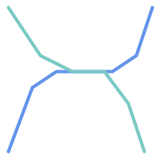
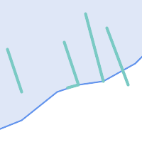

空間データベースのレゾンデートルは、通常ならデスクトップGISの機能が必要なクエリをデータベース内で実行することです。PostGISを使うには、使用可能な空間関数は何かを知り、またクエリ内でどう使うかを知って、適切なインデックスで能率を向上させることが求められます。
空間関係は、二つのジオメトリについて、一方がもう一方にどのような相互関係になっているかを示すものです。ジオメトリのクエリにおける基本的な機能です。
OpenGIS Simple Features Implementation Specification for SQLによると「二つのジオメトリの比較の基本的なアプローチは、二つのジオメトリの内部、境界、外部のインタセクションの比較と、『インタセクション行列』の要素に基づく2ジオメトリの関係の分類です」。
点集合トポロジでは、2次元空間に埋め込まれたジオメトリの中にあるポイントは、次に示す三つの集合に分類されます。
- 境界
ジオメトリの境界は、一次元低いジオメトリです。
POINTでは、次元が0になり、境界は空集合です。LINESTRINGの境界は二つの端点です。POLYGONの境界は、外環と内環の線です。- 内部 (Interior)
ジオメトリの内部は、ジオメトリの境界以外のポイントです。
POINTでは、内部はポイント自体です。LINESTRINGの内部は端点の間のポイントの集合です。POLYGONの内部は、ポリゴン内部の面です。- 外部 (Exterior)
ジオメトリの外部はジオメトリが組み込まれた空間の残りです。言い換えると、ジオメトリの内部にも境界にもない点の全てです。これは2次元の閉じていない面になります。
Dimensionally Extended 9-Intersection Model (DE-9IM)は、二つのジオメトリの空間関係を九つの交差の次元を指定することで記述します。交差次元は3×3の交差行列で正式に表現することができます。
ジオメトリgに対する内部、境界、外部はI(g)、B(g)、E(g)と表記します。また、dim(s)はsの集合を{0,1,2,F}の値で示すます。
0=> 点1=> 線2=> 面F=> 空集合
この表記法を使うと、二つのジオメトリaとbの交差行列は次の通りです。
| 内部 (Interior) | 境界 (Boundary) | 外部 (Exterior) | |
|---|---|---|---|
| 内部 (Interior) | dim( I(a) ∩ I(b) ) | dim( I(a) ∩ B(b) ) | dim( I(a) ∩ E(b) ) |
| 境界 (Boundary) | dim( B(a) ∩ I(b) ) | dim( B(a) ∩ B(b) ) | dim( B(a) ∩ E(b) ) |
| 外部 (Exterior) | dim( E(a) ∩ I(b) ) | dim( E(a) ∩ B(b) ) | dim( E(a) ∩ E(b) ) |
二つのオーバラップするポリゴンについて可視化すると、次のようになります。
| ||||||||||||||||||
|
|

左から右に、上から下に読みます。交差行列の文字列表現は'212101212'です。
詳細情報については次をご覧下さい。
共通の空間関係を簡単に決定できるように、PGC SFSは名前付き空間関係述語の集合を定義しています。PostGISではST_Contains、ST_Crosses、ST_Disjoint、ST_Equals、ST_Intersects、ST_Overlaps、ST_Touches、ST_Withinが提供されています。非標準の空間関係述語ST_Covers、ST_CoveredBy、ST_ContainsProperlyも定義されています。
空間述語は通常SQLのWHERE節やJOIN節内で条件に使用されます。名前付き空間述語は、インデックスが有効なら自動的に空間インデックスを使うので、バウンディングボックス演算子&&を使う必要はありません。例えば次のようになります。
SELECT city.name, state.name, city.geom FROM city JOIN state ON ST_Intersects(city.geom, state.geom);
詳細や図についてはPostGIS Workshopをご覧下さい。
名前付き空間関係が求める空間フィルタ条件を与えるのに不十分となる場合があります。
 例えば、道路ネットワークを表現する線データセットを考えてみます。点でなく線で交差する全ての道路の辺を識別しなければならないことがあります (ビジネスルールの検証のためならありえます)。この場合、ST_Crossesでは、点で交差する場合しか 2ステップ解決法を示します。まず、空間的にインタセクトしている同路線の二本を抜き出し (ST_Intersects)、実際にインタセクトしている部分を計算 (ST_Intersection)します。次いで、インタセクトしている部分のST_GeometryTypeが 明らかに、より単純でより速い解法が望ましいです。 |
 二つ目の例では、湖の境界とインタセクトし、かつ終端が岸に上がっている波止場を見つけます。言い換えると、波止場が湖に含まれるが完全には含まれず、湖の境界線とインタセクトして、波止場の終端が確実に湖内または境界にある場合を指します。空間述語を併用すると求める地物を見つけることができます。
|
この要件は完全なDE-9IM交差行列の計算で満たすことができます。PostGISは、これを行うST_Relate関数を提供しています。次のようにします。
SELECT ST_Relate( 'LINESTRING (1 1, 5 5)',
'POLYGON ((3 3, 3 7, 7 7, 7 3, 3 3))' );
st_relate
-----------
1010F0212
特定の空間関係をテストするには、交差行列パターンを使います。これは、追加シンボル{T,*}で拡張された行列表現です。
T=> インタセクションの次元は空ではないという意味です。すなわち{0,1,2}のいずれかです。*=> 何でも良い
交差行列パターンを使って、特定の空間関係の評価がより簡潔な方法で可能です。交差行列パターンのテストにST_RelateとST_RelateMatchを使うことができます。上に挙げた一つ目の例では、二つのラインがライン内部でインタセクトする交差行列パターンは'1*1***1**'となります。
-- ライン内でインタセクトする道路区間を見つける
SELECT a.id
FROM roads a, roads b
WHERE a.id != b.id
AND a.geom && b.geom
AND ST_Relate(a.geom, b.geom, '1*1***1**');二つ目の例です。一本のラインが部分的にポリゴン内部とポリゴン外部とにある場合の交差行列パターンは '102101FF2'となります。
-- 一部が湖の水涯線上にある波止場を見つける
SELECT a.lake_id, b.wharf_id
FROM lakes a, wharfs b
WHERE a.geom && b.geom
AND ST_Relate(a.geom, b.geom, '102101FF2');空間条件を使用するクエリを構築する時、最良の効果を得るには、空間インデックスが存在する場合に (Section 4.9, “空間インデックス”参照)これを確実に使用することが重要です。そのためには、WHERE節やON節で、空間演算子またはインデックス対応関数を使用しなければなりません。
空間演算子には、バウンディングボックス演算子 (最もよく使われるのは&&です。Section 8.10.1, “バウンディングボックス演算子”参照)、および近傍クエリで使用される距離演算子 (最もよく使われるのは<->です。Section 8.10.2, “距離演算子”参照)が含まれます。
インデックス対応関数は、自動的にバウンディングボックス演算子を空間条件に追加します。インデックス対応関数は空間関係述語を含みます。空間関係述語には、ST_Contains, ST_ContainsProperly, ST_CoveredBy, ST_Covers, ST_Crosses, ST_Intersects, ST_Overlaps, ST_Touches, ST_Within, ST_Within, ST_3DIntersectsがあり、距離述語にはST_DWithin, ST_DFullyWithin, ST_3DDFullyWithin, ST_3DDWithin があります。
ST_Distanceといった関数は、演算の最適化のためにはインデックスを使用しません。例えば、次のクエリは、大きなテーブルでは非常に遅くなります。
SELECT geom FROM geom_table WHERE ST_Distance( geom, 'SRID=312;POINT(100000 200000)' ) < 100
このクエリはgeom_tableテーブル内の、(100000, 200000)のポイントから100単位内にある全てのジオメトリを選択します。テーブル内の個々のポイントと指定したポイントとの距離を計算しているため、非常に遅くなります。すなわち、1回のST_Distance()の計算で、テーブルの全ての行について計算することになります。
インデックス対応関数ST_DWithinを使用すると、処理行数を実質的に減らすことができます。次のようにします。
SELECT geom FROM geom_table WHERE ST_DWithin( geom, 'SRID=312;POINT(100000 200000)', 100 )
このクエリは、同じジオメトリを選択しますが、より効率的な方法を取ります。 ST_DWithin()が内部で&&演算子をクエリジオメトリのバウンディングボックスを拡大したボックスで使うことによって可能となります。geom上に空間インデックスが存在するなら、クエリプランナは距離計算の前に対象行数を減らすためにインデックスを使えることを認識します。空間インデックスによって、バウンディングボックスが拡張された範囲とオーバラップするジオメトリだけを検索して、そのため、求めようとする距離内にあるかも知れないジオメトリを検索することができます。その後で、結果集合内のレコードを含めるかどうかを確認するための実際の距離計算が行われます。
詳細情報と例についてはPostGIS Workshopをご覧下さい。
本節の例では、線の道路のテーブルとポリゴンの市区町村境界テーブルとを使います。bc_roadsテーブルの定義は次の通りです。
Column | Type | Description ----------+-------------------+------------------- gid | integer | Unique ID name | character varying | Road Name geom | geometry | Location Geometry (Linestring)
bc_municipalityテーブルの定義は次の通りです。
Column | Type | Description ---------+-------------------+------------------- gid | integer | Unique ID code | integer | Unique ID name | character varying | City / Town Name geom | geometry | Location Geometry (Polygon)
- 5.3.1. 道路の総延長はkm表記でいくらになるでしょう?
- 5.3.2. プリンスジョージ市の大きさはha表記でいくらになるでしょう?
- 5.3.3. 県内で最も大きな面積となる自治体はどこでしょう?
- 5.3.4. 各自治体内に含まれる道路の総延長はいくらでしょう?
- 5.3.5. プリンスジョージ市内の全ての道路からなるテーブルを作ります。
- 5.3.6. ビクトリア州の「ダグラス通り」の長さはkm表記でいくらになるでしょう?
- 5.3.7. 穴を持つ自治体ポリゴンのうち最も大きいのはどれでしょう?